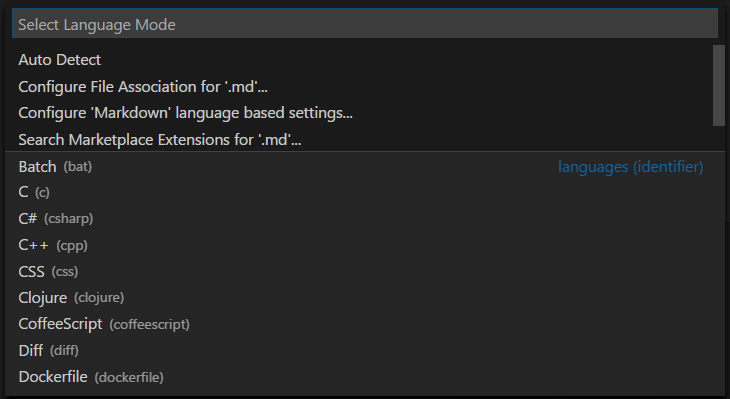

Programming Languages
Hundreds of programming languages supported
In Visual Studio Code, we have support for almost every major programming language. Several ship in the box, for example, JavaScript, TypeScript, CSS, and HTML but more rich language extensions can be found in the VS Code Marketplace.
Here are eight of the most popular language extensions:
Go to the Marketplace or use the integrated Extensions view and search for your desired programming language to find snippets, code completion/IntelliSense providers, linters, debuggers, and more.
Note: If you want to change the display language of VS Code (for example, to Chinese), see the Display Language topic.
Language specific documentation
Learn about programming languages supported by VS Code. These include: C++ - C# - CSS - Dart - Dockerfile - F# - Go - HTML - Java - JavaScript - JSON - Less - Markdown - PHP - PowerShell - Python - SCSS - T-SQL - TypeScript.
Click on any linked item to get an overview of how to use VS Code in the context of that language. Most language extensions also contain a summary of their core features in their README.
Language features in VS Code
The richness of support varies across the different languages and their extensions:
- Syntax highlighting and bracket matching
- Smart completions (IntelliSense)
- Linting and corrections
- Code navigation (Go to Definition, Find All References)
- Debugging
- Refactoring
Changing the language for the selected file
In VS Code, we default the language support for a file based on its filename extension. However, at times you may want to change language modes, to do this click on the language indicator - which is located on the right hand of the Status Bar. This will bring up the Select Language Mode dropdown where you can select another language for the current file.

Tip: You can get the same dropdown by running the Change Language Mode command (kb(workbench.action.editor.changeLanguageMode)).
Language Id
VS Code associates a language mode with a specific language identifier so that various VS Code features can be enabled based on the current language mode.
A language identifier is often (but not always) the lowercased programming language name. Note that casing matters for exact identifier matching ('Markdown' != 'markdown'). Unknown language files have the language identifier plaintext.
You can see the list of currently installed languages and their identifiers in the Change Language Mode (kb(workbench.action.editor.changeLanguageMode)) dropdown.

You can find a list of known identifiers in the language identifier reference.
Adding a file extension to a language
You can add new file extensions to an existing language with the files.associations setting.
For example, the setting below adds the .myphp file extension to the php language identifier:
"files.associations": {
"*.myphp": "php"
}
IntelliSense (kb(editor.action.triggerSuggest)) will show you the available language identifiers.

Next steps
Now you know that VS Code has support for the languages you care about. Read on...
- Code Navigation - Peek and Go to Definition and more
- Debugging - This is where VS Code really shines
Common questions
Can I contribute my own language service?
Yes you can! Check out the example language server in the VS Code Extension API documentation.
What if I don't want to create a full language service, can I reuse existing TextMate bundles?
Yes, you can also add support for your favorite language through TextMate colorizers. See the Syntax Highlight Guide in the Extension API section to learn how to integrate TextMate .tmLanguage syntax files into VS Code.
Can I map additional file extensions to a language?
Yes, with the files.associations setting you can map file extensions to an existing language either globally or per workspace.
Here is an example that will associate more file extensions to the PHP language:
"files.associations": {
"*.php4": "php",
"*.php5": "php"
}
You can also configure full file paths to languages if needed. The following example associates all files in a folder somefolder to PHP:
"files.associations": {
"**/somefolder/*.*": "php"
}
Note that the pattern is a glob pattern that will match on the full path of the file if it contains a / and will match on the file name otherwise.
How do I set the default language for new files?
Using the files.defaultLanguage setting, you can map all new files to a default language. Whenever a new blank file is opened, the editor will be configured for that language mode.
This example will associate new files with the HTML language:
// The default language mode that is assigned to new files.
"files.defaultLanguage": "html"